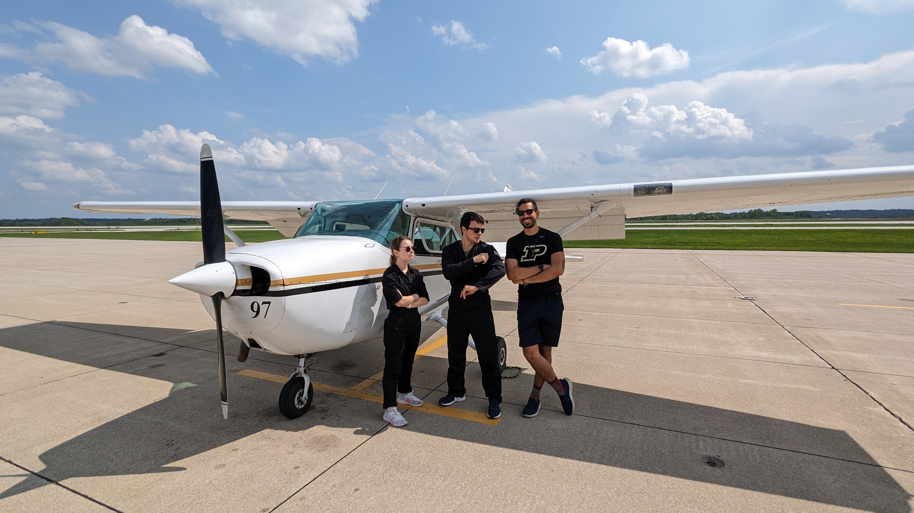
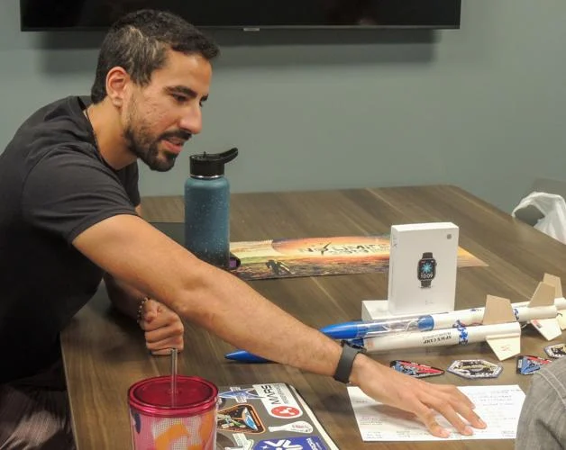
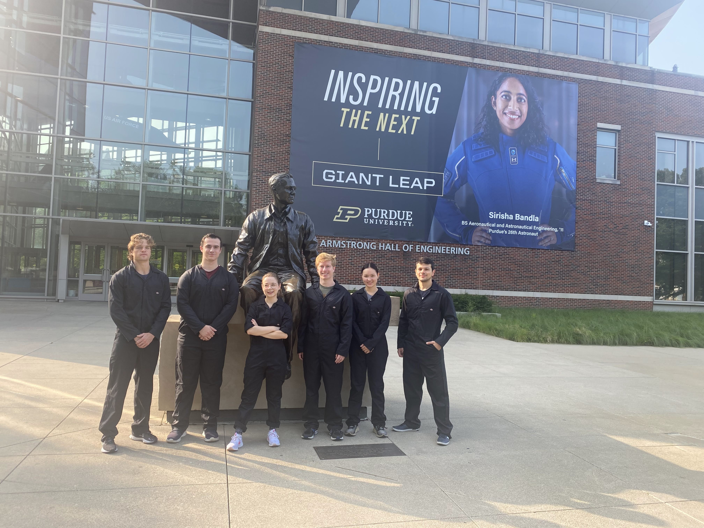

This Article by James Kling, Appeared in Purdue Exponent on November 2, 2023
 After weather had canceled flight lessons multiple times for those participating in a three-week mock astronaut program in July, graduate student Moacir Becker said their instructor told them to fly toward the storm. “I had taken some flight lessons before here at Purdue, but I had definitely never flown toward the storm,” he said. Becker was part of a six-person crew testing out the program that began through the Space and Earth Analogs Research Chapter of Purdue. “We learned a valuable lesson,” crew commander Emilie Lafleche said, “which is when you're a pilot, always fly toward the storm because if you fly away from it, it might catch up to you and you can't go home that night.” Lafleche, a doctoral candidate studying planetary sciences in early Earth, said she’d been part of an Analog Space Mission in Poland before joining SEARCH. Analog missions are programs NASA designs to simulate the conditions crew members would have to go through on space missions, NASA’s website says. This includes tests such as new equipment and they also simulate behavioral problems, such as isolation and team dynamics. Doctoral student in Aerospace Space Systems Rod Schmitt, a member of the planning committee for the program, had reached out to Lafleche after her analog mission to see if she would be interested in joining. “I already had this idea in my head of … maybe we could do some kind of program on campus that prepares students for something like this that can sort of give them the footing they need to eventually participate in analog missions,” Lafleche said. The program, called the Student Analog Astronaut Training Program, or SA²TP, took place at the end of July and went into August. Each of the six crew members had to follow a schedule packed with physical activities, guest lecturers, rover workshops and a hackathon. The guests' lectures varied widely in topics.“Some of them were from psychology, others were for dietitians, for instance, we even had an astronaut candidate in Canada,” Becker said. “She actually works at Purdue, her name is Michelle Thompson." “She gave us a lot of insights in terms of the application process and everything, how it works for Canada … There's a lot of commonality across different application processes for astronauts.” The hackathon, which was a popular activity for the crew members, took place on Wednesday and Thursday of the second week. “They got to build an entire program in Unity, (a coding language), that tracked near-Earth object orbits,” Lafleche said. “None of them knew Unity before that. So they learned it and built an entire program in two days, which was very impressive.” After about two-and-a-half weeks of doing all these activities around campus, the crew drove to Huntsville, Alabama to participate in NASA’s Adult Space Academy for the last three days of their program. “We classify ourselves as being bound by nothing because we are a very ambitious club,” planning committee member Lainie Rapp said. “And again, this started as an idea and it was like, 'Can we do this? We're gonna do it.'” The entire three weeks were planned between Oct. 20, 2022 and July 23, the day before the program officially began.

But Schmitt said most of the success came from the amount of different people who worked to make sure it happened. “One of the things that we really emphasize in SEARCH that I think is a game changer for this organization is valuing interdiscipline and just diversity in general,” he said. “We couldn't have done this program with this quality without other clubs supporting us.” One of the clubs they partnered with for the program was Lunabotics, a campus club that designs and builds lunar robots. During the course of the three weeks, crew members were able to operate one of Lunabotics’ robots to practice robot mining and control. “One of the members in our organization committee actually had the idea of bringing in Lunabotics because he was also part Lunabotics and that member is actually from industrial engineering,” Schmitt said. Schmitt said the club has people from many areas of study other than aerospace, they have members studying computer science and creative writing, for example. Applications for next year's program won’t be released until later in the Spring semester, but anyone interested in helping plan the program can reach out to SEARCH and any of their social media platforms for information on how to join and help. When asked whether planning for next year had already begun, Schmitt, Rapp and Lafleche began cheering.
“We decided to start early this year because of the magnitude that we're aiming for this next iteration of the program,” Lafleche said. Club members have already started being contacted by clubs from other universities to collaborate with them on similar projects. Hopefully, Lafleche said, the program can be bigger in future iterations and help more people with more different backgrounds gain space training. 